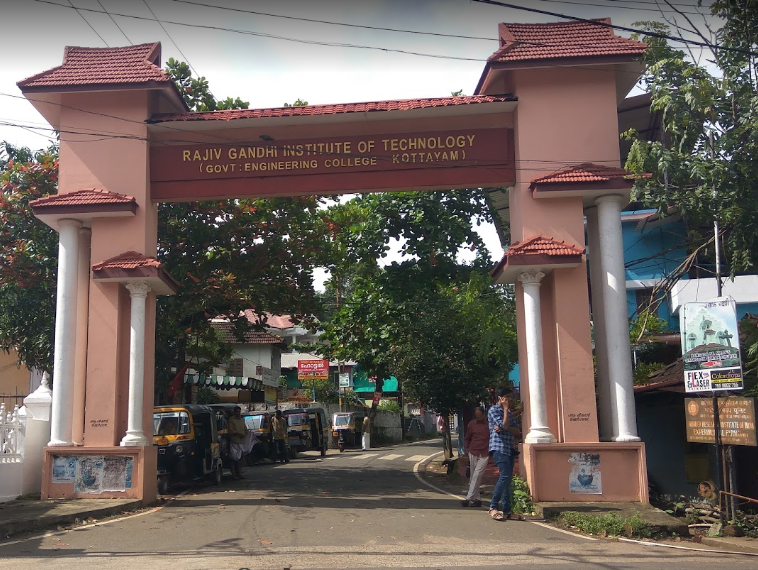

Rajiv Gandhi Institute of Technology, named after the late Prime Minister Sri Rajiv Gandhi, run by the Government of Kerala, started functioning in 1991. It has established a vast infrastructure and put together a team of dedicated teachers. The institution has become one of the leading technical Institutes in Kerala.
In RIT, Kottayam, the Master of Computer Applications (MCA) course was started in the year 2001. This post graduate course aims to mould professionals to meet the complex demands of the IT industry. Curriculum of the MCA course has been designed with emphasis on theoretical and practical applications of computer technology, for enabling the students to be knowledgeable in various programming languages, computer hardware, database management, data mining, etc. This course is designed for those who want to establish their credentials in the field of Information Technology as specialists. Syllabus of the course is revised and updated by the University from time to time keeping in view of the ever changing trends in IT industry. Many of our students get campus placements in reputed firms like TCS, IBS, OFSS, Accenture, Wipro, Mphasis, UST Global.
| UG | ||
| course | Department | InTake |
|---|---|---|
| B.Tech | Civil Engineering | 66 |
| Mechanical Enginerring | 66 | |
| Electrical & Electronics Engineering | 66 | |
| Electrical & Communication Engineering | 66 | |
| Computer Science & Engineering | 66 | |
| B.arch | Architecture | 40 |
| PG | |||
| course | Department | Specialization | InTake |
|---|---|---|---|
| M.Tech | Civil Engineering | Transoortation Engineering | 18 |
| Mechanical Enginerring | Industrial Eng. & Management | 18 | |
| Electrical & Electronics Engineering | Industrial Drives & control | 18 | |
| Electrical & Communication Engineering | Advanced communication & Information system | 18 | |
| Electrical & Communication Engineering | Advanced Electronics and communication | 18 | |
| Computer Science & Engineering | Computer Science & Engineering | 18 | |
| MCA | MCA | computer Applications | 60 |